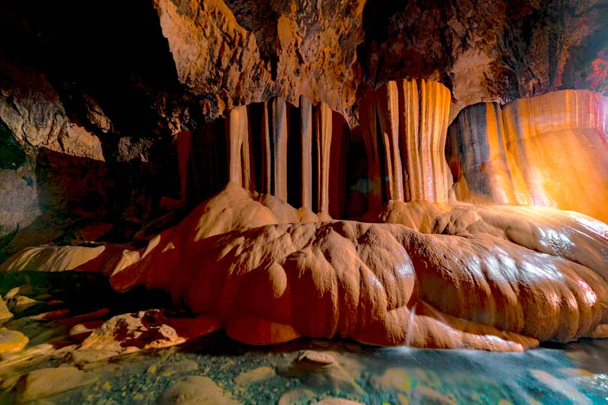

Sumaguing Cave in Sagada, Mountain Province is the most spectacular cave in the Cordillera — a massive limestone cavern with cathedral-like chambers, dramatic formations, an underground river, and a caving adventure that takes you deep into the living mountain.

Sumaguing Cave (also called Big Cave) is the most famous and spectacular cave in Sagada, Mountain Province. It is a large limestone cave system with multiple chambers, dramatic stalactite and stalagmite formations, an underground river, and sections that require wading, climbing, and squeezing through narrow passages.
The cave is named after the Sumaguing — a legendary figure in Igorot mythology. The cave's chambers have evocative names: the King's Curtain, the Cauliflower, the Pregnant Woman, the Turtle — each formation shaped by millions of years of water and limestone chemistry into extraordinary natural sculptures.
Caving in Sumaguing is a genuine adventure — you will get wet, muddy, and will need to use ropes and your guide's assistance to navigate some sections. The experience is physically demanding but deeply rewarding, and the formations inside are among the most spectacular in the Philippines.
Sumaguing Cave is in Sagada, Mountain Province — reached via Baguio City and the scenic Halsema Highway through the Cordillera.
Take a bus from Manila to Baguio City (~5₱6 hours). Baguio is the main staging point for Sagada trips.
Bus: ~5₱6 hrs | ~₱400–₱600From Baguio City, take a bus or van to Sagada (~5₱6 hours) via the Halsema Highway — one of the most scenic mountain roads in the Philippines.
Bus/van: ~5₱6 hrs | ~₱200–₱350Register at the Sagada Tourism Office and hire a licensed local guide. A guide is mandatory for Sumaguing Cave — the cave is complex and dangerous without one. The guide provides kerosene lamps and ropes.
Environmental fee: ~₱50–₱100 | Guide: ~₱500–₱800The Sumaguing Cave tour takes 2₱3 hours and involves wading through water, climbing over formations, and using ropes in some sections. Wear clothes you don't mind getting wet and muddy. Sandals or old shoes are recommended.
🚌 Tour: ~2₱3 hrs | Wear clothes you can get wetClick any pin to explore Sumaguing Cave, the Hanging Coffins, and the key sites of Sagada.
Combine Sumaguing Cave with the Hanging Coffins for the perfect Sagada adventure day.
Register at the Sagada Tourism Office and have breakfast at a local cafe. Try the Sagada Arabica coffee — it's exceptional and will fuel your cave adventure.
Trek to Echo Valley for the Hanging Coffins. The morning light in the valley is beautiful and the crowds are smaller than in the afternoon.
Head to Sumaguing Cave for the 2₱3 hour caving adventure. Wade through underground rivers, climb over formations, and marvel at the cathedral-like chambers and dramatic stalactites.
Return to Sagada town for lunch and a shower. You'll need it after the cave. Try pinikpikan or etag at a local Igorot restaurant.
Explore Sagada town — browse the local shops for coffee, handicrafts, and woven textiles. Visit the Saint Mary the Virgin Episcopal Church, one of the oldest churches in the Cordillera.
Watch the sunset from the Sagada viewpoint as the mountains turn gold. Have dinner at a local restaurant and prepare for the next day's Bomod-ok Falls trek.
"Sumaguing Cave is the most extraordinary cave I've visited in the Philippines. The chambers are enormous — cathedral-like spaces with formations that look like they were sculpted by a master artist. Wading through the underground river by kerosene lamplight, with the stalactites glittering above me, was one of the most magical experiences of my travels. Our guide was excellent — knowledgeable, safe, and full of stories about the cave's mythology."
"I did the Connected Cave tour — Sumaguing to Lumiang — and it was the most physically demanding and rewarding thing I've done in the Philippines. Four hours underground, wading, climbing, squeezing through passages, with only kerosene lamps for light. The formations are extraordinary. Sagada is one of the great travel destinations in the country and Sumaguing Cave is its crown jewel."